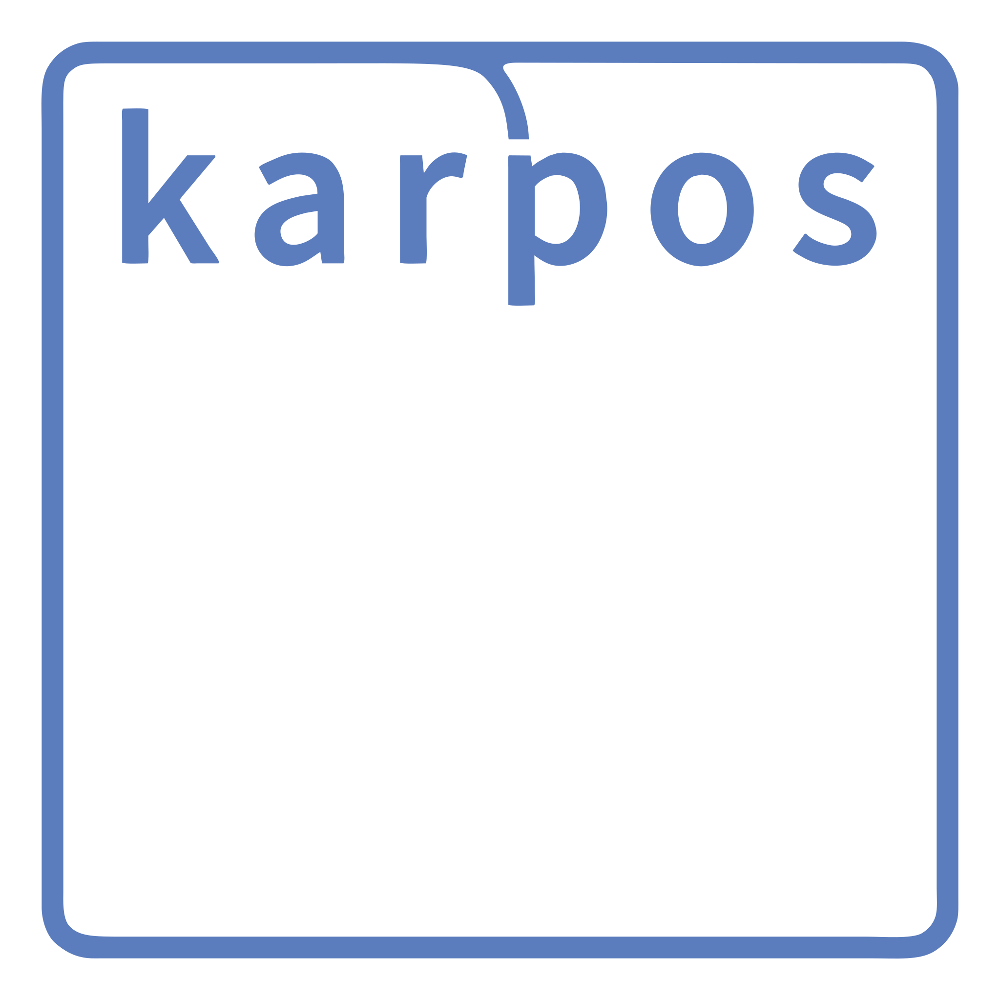
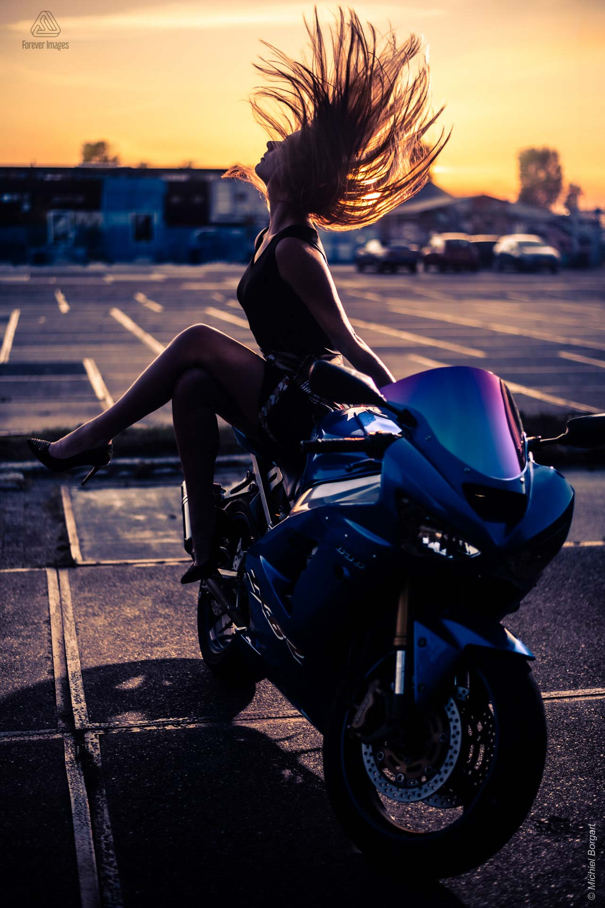

AI Training · sdai.nlHoi michiel 👋
Je omgeving draait. Deze pagina wordt geserveerd vanuit
/workspace/michiel-website op poort 3000 en is
live op michiel.sdai.nl.
Aan de slag met je agent:
- Open de browser-IDE of SSH in je omgeving.
- Laat de agent deze site verbouwen tot jouw web-app.
- Sla het werk op:
git add -A && git commit -m "..." && git push
Je code staat in github.com/sayfjawad/michiel-website.
Vervang gerust server.js en index.html door je eigen framework —
blijf alleen op 0.0.0.0:3000 serveren.
Over Karpos Consulting
Karpos Consulting is het freelance business-analysebureau van ing. Michiel Borgart MBA, actief in Nederland. De naam "Karpos" is Grieks voor "vrucht" en staat symbool voor het resultaat dat hij beoogt te leveren voor zijn opdrachtgevers.
Kernwaarden: Samen, Rust & Focus
Drie pijlers vormen de basis van zijn werk. Samen benadrukt samenwerking met stakeholders en collega’s. Rust staat voor zorgvuldig luisteren, onderzoeken, analyseren en begrijpen. Focus stelt hem in staat om besluitvorming helder te ondersteunen en opties en scenario’s uit te werken.
Dienstverlening
Business analyse met als doel zo passend mogelijk resultaat voort te brengen, afgestemd op de omgeving en doelstellingen van de opdrachtgever.
Profiel Michiel Borgart
- 1994–1998: HTS Hogeschool Utrecht, werktuigbouwkundig ingenieur (energietechniek).
- 1998: ICT-consultant bij Logica (nu CGI), als COBOL-programmeur.
- 2011: eerste rol als lead business analist bij Ziggo.
- 2015: start fotografiebedrijf Forever Images.
- 2016–2019: MBA, specialisatie Business Information Management.
- 2018: BCS International Diploma in Business Analysis.
- 2022: start Karpos Consulting als freelance business analist.
- 2024: Bijbelleraar bij City Life Church Den Haag.
- 2025: uitrol webshop Mpressions.
- 2026: gecertificeerd Keys Activator.
Certificeringen
- BCS International Diploma in Business Analysis
- Stakeholder Engagement, Business Analysis Practice, Modeling Business Processes, Foundation in Business Change, Requirements Engineering.
- Certified Enterprise Architect Professional (CEAP)
- TOGAF (level 2) en ArchiMate (Practitioner).
- Overige
- Certified SAFe Agilist, Scrum Product Owner, PRINCE2 (Practitioner), ITIL (Foundation) en TM Forum-frameworkcertificeringen.
Opdrachtgevers (vanaf 1998)
Onder meer Achmea Real Estate, AEGON, Air France-KLM, Alliander, ASR, Royal BAM Group, DELTA, Gemeente Den Haag/Ede/Rotterdam, Hogeschool Utrecht, Infomedics, KPN, Logica (CGI), Manpower Group, drie ministeries, RDW, Telfort, UWV, Ziggo en Zorginstituut Nederland.
Contact en gegevens
WhatsApp +31 (0)6 1151 3441, e-mail en LinkedIn. KvK: 65074548 · btw: NL001940896B60 · IBAN: NL05 RABO 0317 8890 44.
Meest commercieel kansrijke foto uit het portfolio

Uit de 353 beelden van het Forever Images-portfolio selecteer ik de foto hairflip op een Kawasaki Ninja ZX-6R 636 bij zonsondergang (model Heleen, NDSM-werf Amsterdam) als commercieel het meest kansrijk. De combinatie van een krachtig merkproduct, een heldere lifestyle-esthetiek en een sterke, symbolische setting maakt dit beeld breed verkoopbaar.
1. Een concreet commercieel onderwerp
De Kawasaki Ninja ZX-6R 636 is een herkenbaar en gewild sportmodel. Automotive- en motoradvertenties vormen een grote, goed betalende markt in print, online en op social media. Daarmee heeft het beeld een directe commerciële afzetmarkt bij merken, dealers en motorbladen.
2. Meer dan alleen een productshot
De foto overstijgt de pure productplaat: de rijdster met wapperend haar, het gouden tegenlicht en de rauwe industriële NDSM-omgeving voegen beweging, emotie en een verhaal toe. Het is tegelijk een modebeeld, een redactioneel beeld en een lifestyle-advertentie. Die veelzijdigheid vergroot het aantal mogelijke afnemers.
3. Sterke techniek en uitstraling
Het gouden uur levert warm, flatterend licht en een premium, aspirerende sfeer. De dynamische compositie en de beweging in het haar zorgen voor een professionele, editoriale look. Het staande (portret)formaat is bovendien ideaal voor Instagram, Pinterest, tijdschriftomslagen en posters.
4. Breed inzetbaar en actueel
Het beeld sluit aan bij actuele commerciële trends — urban, golden hour, motorsport-lifestyle en sterke modellen — en is eenvoudig te licenseren voor uiteenlopende doeleinden zonder grote privacy- of ethische bezwaren. Daarom beschouw ik deze foto als het commercieel meest kansrijke beeld uit het gehele portfolio.